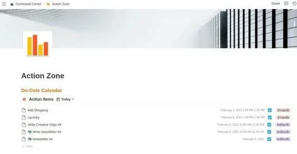

The Productive and Quick Morning routine - in Notion
Feb 9 '22 • Written by Yassen Shopov
📖 6 minute read
Studies have shown that having a set routine (a series of tasks that you follow as a tradition) is generally beneficial to one’s mental health, especially for young people. [1]
Many of us noticed this during (one of) the many lockdowns when most days flushed together, and the lack of outdoors activity messed with everything - from your sleep quality to your general mood. And yes, this could be attributed to a number of factors such as the global anxiety related to the pandemic or the lack of social contact with others during this time of crisis. I would argue, however, that it was the lack of routine in my day-to-day life that contributed most to my lack of motivation and low productivity.
Whenever I chose to neglect my sleep routine, for example, and wake up whenever I felt like it, it would ultimately lead to a sense of disappointment with myself, and I would further procrastinate tasks that were designated for the early morning. I was losing my most productive hours to oversleeping, and this led to a domino effect throughout my other habits.
In this article, I will go into the details of my new and upgraded morning routine, which has helped me stay on top of all my projects (as a 3rd-year student, freelancer, and content creator), get mental clarity and allow me to focus on my most important tasks.
For me, the key to a successful morning routine is the level of customization it allows. If I provide every single person in the world with the identical set of tools to craft their “ideal” morning routine, it still wouldn’t work. People’s morning routines are as unique as they are themselves. For example, I personally don’t enjoy working out early in the morning, while other people find it to be their most productive thing to start their day with.
For me, since I work in front of a screen the majority of the time, I prefer to set the tone of the day in a similar manner. I use my favourite productivity app, Notion, to keep track of my morning routine. It can be used as a habit tracker
1. Turn your tasks into events
As I have argued before in another article, I believe that there is a big distinction between what we consider tasks in our to-do lists and the events in our calendar.
We may have an endless list of tasks - big and small, which we keep track of. But there is usually this feeling of uncertainty connected to managing a to-do list. It’s usually a direct consequence of the lack of detail in the task. Most likely you haven’t specified the time at which you will do the task, the duration, its priority, etc.
And if you are feeling particularly low-energy during the day, you may find it hard to engage in several tasks. Which one do I start with? Should I multitask? Which one has the highest priority? Those are all questions we ask ourselves in a loop until we get tired and do just the bare minimum. The sooner we set our tasks into our calendar, the less we need to overthink - when the time comes, you just sit down and do the task at hand.
This is why this is the first step of our morning routine I propose. I personally keep a list of all the things I need to do in more or less chronological order in Notion, which looks like this:
The tasks may not be assigned a precise “do-time”, but they always have a “do-date”. This means that there are no tasks left for the far future, only actively managed tasks to be done when I reach a specific point in time.
My first task in the morning, after I have washed my face and brushed my teeth, is to hop on Notion and transform my Notion tasks into Google Calendar events. I used to do this manually, but I have been using my own Python script to automate this process lately, which you can find over here on GitHub.
2. Decide on the daily highlight
This is a piece of advice I have been implementing in my own life ever since I read the book “Make Time” by Jake Knapp and John Zeratsky. The book provides a long list of different techniques to maximise your performance in time and task management. Most of them, however, boil down to getting rid of distractions and remaining focused on a singular task at hand.
The daily highlight, as bolded in the book, is the most important thing you will be doing this day. It could sometimes be as simple as doing your homework, or the dishes. The thing is, the daily highlight is the one task that you should make sure you complete no matter the distractions. You’re free to choose the methods to get it done - it just has to be done. This is shown to contribute positively to a person’s motivation. Once you know you have done your first priority for the day, you have the motivation to complete your other tasks as well.
It is a much healthier mindset than constantly feeling behind in everything, and I assure you it makes a positive change.
3. Choose your environment
As James Clear advises multiple times in his book “Atomic Habits”, you should always be making sure your environment is there to help you, not misguide you and distract you.
Starting off this semester of university, I made the decision to spend as little time possible working in my room. So far, I have been trying to move myself to places that allow for more concentrated work, where I am away from major sources of distraction. Also, my room is pretty small, so it is the same place at which I usually study, sleep, rest, eat, and so on. It’s nigh impossible to make it a designated study space. This is the reason why the library is such a good study spot - it’s not because of the books or the building itself, but it has more to do with the fact that there are so few distractions all around. Also, the people around you are also busy working so the general atmosphere is that you should be studying.
This is why I suggest this as a good part of your morning routine - choose the places that will serve as a work environment for you throughout the day. Look at your task list. Do you have a block of time dedicated to studying? Consider hopping over to the library. Do you need to go to the gym, and also do shopping? Try to shuffle your activities in such a way that it doesn’t bring too much commute into your routine. The point is to lower the friction between you and the completion of a certain task.
Also, by having a proper “map” of what you will be doing and where you’ll be going throughout the day, you can better visualise your time horizon and get a better idea of the experience you’ll be having.
This is a task very much achievable in Notion, by tagging your items with the place you will be going to. When you do transition them into Google Calendar, it will look like a proper map of the time and space of your day.
With all that said, I hope you found this article useful, under the references you will find some other companion essays to this one.
References
[1] Arlinghaus, K. R., & Johnston, C. A. (2018). The Importance of Creating Habits and Routine. American journal of lifestyle medicine, 13(2), 142–144. https://doi.org/10.1177/1559827618818044